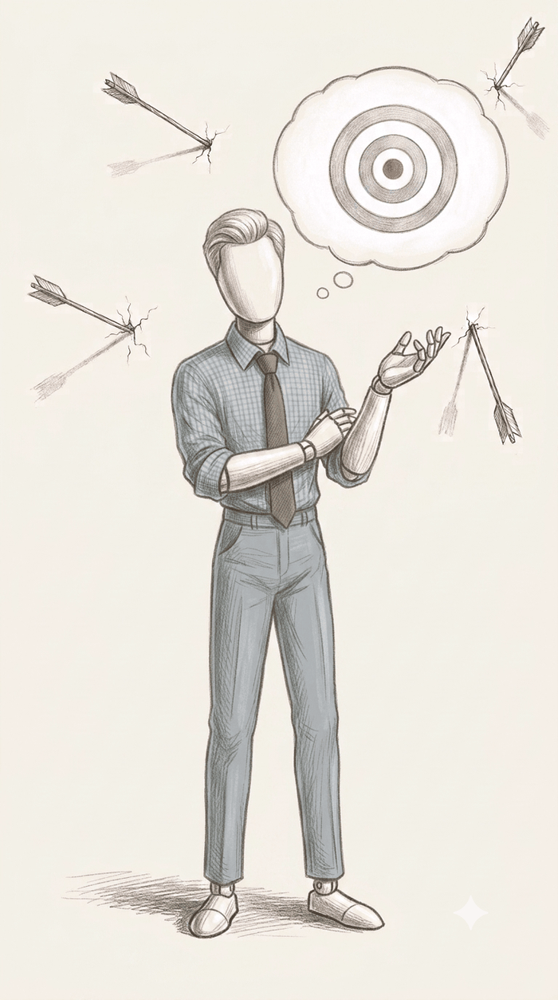

the client was thinking

Vajon mire gondolt az ügyfél?
Örök kérdés. Néha a rutin segít, néha az emberismeret, sokszor pedig a mázli. 12 kérdés, 36 opció. Akár bármelyik jó lehetne, de most csak az egyik az. Tedd próbára magad! Ha egyben kimaxolod, és még mázlid is van: meghívlak egy ebédre.
Nem.
Amit mondott
Amire gondolt
Innen már csak a poénokért. Az ebéd a hibátlan futamé.
12 / 12
Egyetlen hiba nélkül. Vagy tényleg ismered az ügyfeleket, vagy nagyon szerencsés vagy.
Mindkettő jó hír.
A jelentkezők közül egyet kisorsolok.
Hogy mikor, azt még én sem tudom.